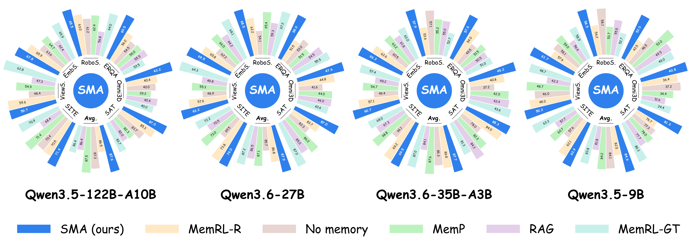
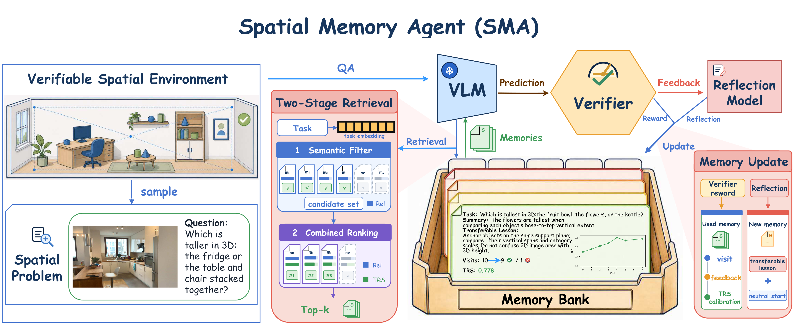
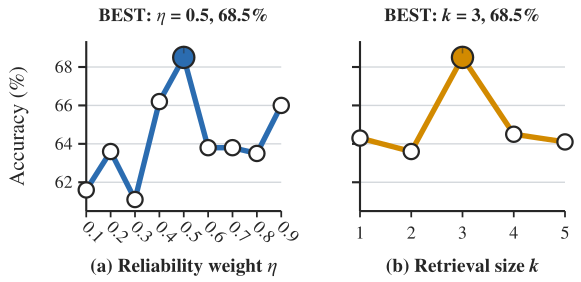
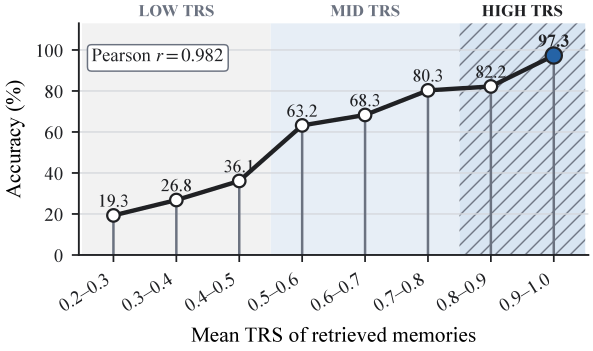
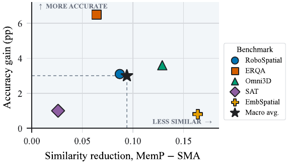
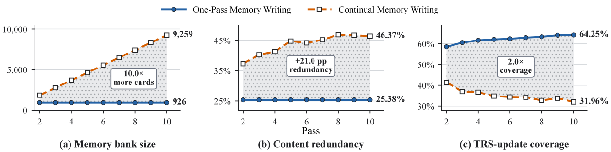
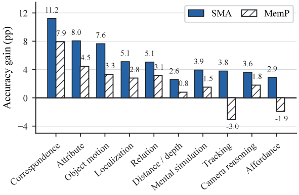
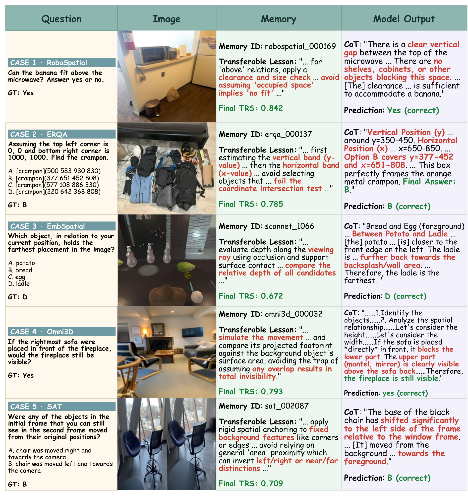

Spatial intelligence is becoming a foundation for embodied agents, robotic planning, and multimodal assistants. To improve the spatial reasoning ability of VLM agents, existing work has mainly followed two lines: post-training methods such as supervised fine-tuning and reinforcement learning, and agentic systems that call external spatial tools to gather intermediate evidence. We study a complementary and underexplored route: can a frozen VLM agent improve its spatial reasoning through parameter-update-free self-evolution, without depending on external expert spatial tools at inference time? We present Spatial Memory Agent (SMA), an experience-grounded runtime framework that converts verified spatial experience into reusable transferable lessons. In a verifiable spatial environment, SMA queries the frozen VLM, obtains a predicted answer and reward, and uses verifier-guided reflection to distill compact transferable lessons. SMA assigns each lesson a Transfer Reliability Score (TRS), initialized uniformly and calibrated from later retrieval outcomes as visit evidence of future transfer reliability. During read-only deployment, SMA retrieves lessons by semantic filtering and similarity-TRS combined ranking to guide frozen-model inference. Across five representative spatial benchmarks and four base VLMs, SMA achieves the highest macro average in every base-model block and the best accuracy in most of the 20 evaluations, establishing a practical parameter-update-free path for spatial self-evolution across the evaluated frozen model scales and environments.

Figure 1. Main benchmark comparison across four frozen base VLMs. Each radial panel reports accuracy for the five main benchmark slices together with SITE-image and ViewSpatial, while each colored bar identifies one memory method and the center labels the corresponding base model.

Figure 2. SMA workflow from verified experience to read-only deployment. A frozen VLM solves a verifiable spatial problem, a verifier-guided reflection step compresses the rollout into a transferable memory card, and semantic filtering plus TRS-based ranking selects memories for a new task without parameter updates or deployment-time writeback.
SMA transforms a verifier-scored rollout into a compact memory card containing a task summary and transferable lesson. The verified target guides reflection, while anti-leakage rules forbid copying answers into memory.
A semantic filter first proposes relevant cards. Combined ranking then balances semantic relevance with calibrated TRS, prioritizing procedures that have demonstrated transfer value in later visits.
After experience acquisition, the memory bank, visit counts, rewards, and TRS values remain fixed. Retrieved lessons guide new tasks while the VLM base model remains frozen.
We evaluate No memory, RAG, MemP, MemRL-R, MemRL-GT, and SMA on five representative spatial benchmark slices and four frozen VLMs. The table reports exact deployment accuracies from the MetaPreprint main table. SMA reports the best completed checkpoint from the 10-pass One-Pass Memory Writing run; Avg. is the macro average over the five benchmark columns. SMA obtains the best average in every completed base-model block: 68.8, 66.7, 69.8, and 63.5, respectively. Relative to the strongest non-SMA baseline, these correspond to gains of 2.6, 2.9, 1.7, and 2.8 points.
| Model | Method | RoboS. | ERQA | Omni3D | SAT | EmbS. | Avg. |
|---|---|---|---|---|---|---|---|
| Qwen3.5-122B-A10B | No memory | 61.2 | 54.5 | 40.0 | 83.7 | 87.3 | 65.3 |
| RAG | 56.8 | 55.5 | 40.4 | 82.0 | 86.4 | 64.2 | |
| MemP | 62.4 | 55.0 | 39.2 | 82.3 | 87.5 | 65.3 | |
| MemRL-R | 63.0 | 56.0 | 40.4 | 85.3 | 86.5 | 66.2 | |
| MemRL-GT | 64.0 | 53.5 | 40.0 | 83.7 | 86.6 | 65.6 | |
| SMA (ours) | 65.5 | 60.5 | 43.2 | 87.0 | 87.6 | 68.8 | |
| Qwen3.6-35B-A3B | No memory | 57.1 | 49.5 | 37.2 | 78.0 | 86.3 | 61.6 |
| RAG | 55.0 | 50.5 | 42.4 | 84.3 | 84.1 | 63.3 | |
| MemP | 55.2 | 51.5 | 42.0 | 82.3 | 87.6 | 63.7 | |
| MemRL-R | 53.6 | 54.0 | 40.8 | 84.0 | 86.8 | 63.8 | |
| MemRL-GT | 52.7 | 51.0 | 43.6 | 81.3 | 87.0 | 63.1 | |
| SMA (ours) | 57.9 | 57.5 | 45.2 | 85.3 | 87.7 | 66.7 | |
| Qwen3.6-27B | No memory | 54.1 | 53.0 | 41.6 | 82.3 | 85.7 | 63.3 |
| RAG | 59.3 | 54.5 | 44.0 | 85.0 | 86.5 | 65.9 | |
| MemP | 65.4 | 51.5 | 44.0 | 86.0 | 87.1 | 66.8 | |
| MemRL-R | 62.2 | 51.5 | 44.8 | 83.7 | 86.8 | 65.8 | |
| MemRL-GT | 67.2 | 55.5 | 43.6 | 87.0 | 87.2 | 68.1 | |
| SMA (ours) | 68.5 | 58.0 | 47.6 | 87.0 | 87.9 | 69.8 | |
| Qwen3.5-9B | No memory | 58.1 | 46.5 | 37.2 | 77.3 | 84.1 | 60.6 |
| RAG | 55.5 | 49.5 | 31.6 | 77.7 | 81.8 | 59.2 | |
| MemP | 53.7 | 53.0 | 34.4 | 78.0 | 84.2 | 60.7 | |
| MemRL-R | 54.2 | 43.5 | 36.4 | 76.7 | 82.5 | 58.7 | |
| MemRL-GT | 52.7 | 49.0 | 34.4 | 80.3 | 83.8 | 60.0 | |
| SMA (ours) | 58.5 | 52.0 | 40.8 | 81.3 | 84.9 | 63.5 |
Table 1. Main results in accuracy (%, Acc.) on five spatial benchmark slices. Dark-gray bold cells mark the best values per column within each base-model block; light-gray cells mark the second-best values.
SMA's gains extend across the evaluated frozen base-model scales rather than being tied to a single model setting.
We isolate the contributions of the memory representation, reflection signal, and retrieval rule on RoboSpatial with Qwen3.6-27B. Each row changes one component while preserving the evaluation setting. Removing the summary, transferable lesson, or semantic filter reduces accuracy by 3.2, 3.5, and 5.8 points; replacing verifier-guided reflection with reward-only reflection reduces it by 5.5 points. We also sweep the TRS weight η and retrieval depth k, which peak at η = 0.5 and k = 3.
| Setting | Accuracy | Δ vs. SMA |
|---|---|---|
| SMA (ours) | 68.5 | - |
| without summary | 65.3 | -3.2 |
| without transferable lesson | 65.0 | -3.5 |
| without semantic filter | 62.7 | -5.8 |
| with raw model output | 64.1 | -4.4 |
| Reward-only reflection | 63.0 | -5.5 |
Table 2. Component and reflection ablations on RoboSpatial with Qwen3.6-27B.
The sensitivity sweep tests the TRS weight η and retrieval depth k under the same model and benchmark. Performance peaks at η = 0.5 and k = 3, indicating that calibrated reliability should complement, rather than overwhelm, semantic filtering. A small η leaves reliability underused, whereas a large value over-prioritizes prior visit evidence over the query's semantic context. Likewise, retrieving too few cards misses relevant procedures, while a larger pool introduces less relevant memories. The interior optimum therefore supports a balanced semantic-reliability ranking with a compact retrieval set.

Figure 3. Sensitivity of η and k on RoboSpatial with Qwen3.6-27B.
Reliable transfer requires both structured memory writing and calibrated retrieval; either unfiltered memories or reward-only reflection weakens the memory bank.
We test whether a memory bank is useful outside the exact setting in which it was written. For model transfer, memories written with Qwen3.5-122B-A10B are deployed with Qwen3.6-27B on the same benchmark. For benchmark transfer, Qwen3.6-27B writes memories on one benchmark and deploys them on another. Each row compares target inference with no memory against the same target inference augmented by transferred memories.
| Transfer setting | No memory | Transferred bank | Δ |
|---|---|---|---|
| Model transfer: Qwen3.5-122B-A10B → Qwen3.6-27B | |||
| RoboSpatial | 54.1 | 63.5 | +9.4 |
| ERQA | 53.0 | 56.5 | +3.5 |
| Omni3D | 41.6 | 44.8 | +3.2 |
| SAT | 82.3 | 88.0 | +5.7 |
| EmbSpatial | 85.7 | 87.3 | +1.6 |
| Benchmark transfer: Qwen3.6-27B | |||
| ERQA → RoboSpatial | 54.1 | 61.7 | +7.6 |
| EmbSpatial → RoboSpatial | 54.1 | 61.4 | +7.3 |
| EmbSpatial → Omni3D | 41.6 | 44.4 | +2.8 |
| Omni3D → EmbSpatial | 85.7 | 87.2 | +1.5 |
Table 3. Representative model and benchmark transfer results. Dark-gray bold cells mark transferred-bank accuracy; light-gray cells show the corresponding no-memory target baseline. Δ is the gain over target inference without memory.
The memory bank transfers across both models and benchmarks, improving performance beyond the setting in which its memories were written.
We bin retrieved memories by their mean Transfer Reliability Score (TRS) and measure deployment accuracy across ERQA, EmbSpatial, Omni3D, RoboSpatial, and SAT for Qwen3.6-27B. Accuracy rises from 19.3% in the [0.2, 0.3) bin to 97.3% in the [0.9, 1.0] bin. Source quality follows the same trend: memories written from successful questions have higher mean TRS and yield 24.3 points higher downstream accuracy than those written from failed questions.
| Source outcome | TRS | Acc. |
|---|---|---|
| Success | 0.522 | 85.7% |
| Failure | 0.452 | 61.4% |
Table 4. Source-quality diagnostic for Qwen3.6-27B: mean TRS and downstream accuracy grouped by source-question outcome.

Figure 4. TRS-reliability diagnostic for Qwen3.6-27B. Retrieved memories are binned by mean TRS, and the plotted deployment accuracy shows the relationship between calibrated reliability and downstream transfer quality.
We group evaluation questions by the outcomes of their three retrieved memories. Accuracy drops from all-success to mixed and all-failure retrieval, while mean TRS follows the same ordering, confirming that memories from successful questions transfer more effectively.
| Composition | N | Acc. | TRS |
|---|---|---|---|
| All success | 13,226 | 93.0% | 0.909 |
| Mixed | 10,264 | 65.1% | 0.653 |
| All failure | 603 | 39.0% | 0.480 |
Table 5. Retrieved-memory composition for Qwen3.6-27B; N is the number of evaluation questions, Acc. is deployment accuracy, and TRS is mean transfer reliability.
Compared with the similarity-oriented MemP reference, SMA lowers macro-average retrieved-memory similarity from 0.792 to 0.698 while increasing macro accuracy from 66.8% to 69.8%. The horizontal coordinate of each marker measures the similarity reduction from MemP to SMA, while the vertical coordinate measures the corresponding accuracy gain; the star summarizes the macro average. All benchmark markers lie above zero, so the lower-similarity retrieval is accompanied by positive accuracy gain rather than a degradation. These paired outcomes show that the most semantically similar memory is not necessarily the most useful procedure for a new task.

Figure 5. Similarity reduction and accuracy gain over MemP for Qwen3.6-27B.
The best memory is not always the nearest memory; transfer reliability turns retrieval from semantic matching into evidence-weighted procedure selection.
We compare One-Pass Memory Writing with continual rewriting over ten passes on five benchmarks using Qwen3.6-27B. Continual writing enlarges the memory bank and increases redundancy. By the final pass, One-Pass uses one tenth as many memories, has 21% less redundancy, and reaches roughly twice the TRS-update coverage.

Figure 6. Memory-writing protocol scaling across ten passes on RoboSpatial, ERQA, Omni3D, EmbSpatial, and SAT. The panels track memory-bank size, content redundancy, and TRS-update coverage for One-Pass and Continual Memory Writing.
One-Pass Memory Writing is far more efficient than continual rewriting: it maintains a smaller, less redundant memory bank while increasing TRS-update coverage.
We quantify accuracy gain over no-memory inference for ten post-hoc atomic spatial abilities, averaged across four base models on the common RoboSpatial, ERQA, SAT, and EmbSpatial scope. SMA improves all ten abilities on average. The largest gains occur on Correspondence (+11.2 pp), Attribute (+8.0 pp), and Object motion (+7.6 pp), while Distance/depth (+2.6 pp) and Affordance (+2.9 pp) remain positive. In contrast, MemP is negative on Tracking (-3.0 pp) and Affordance (-1.9 pp).

Figure 7. Mean atomic-ability gains over No memory; blue bars denote SMA and hatched bars denote MemP.
Atomic gains are broad rather than isolated: SMA improves every atomic ability on average, with the largest lift on correspondence-style spatial checks.
We inspect five representative successful cases by comparing the retrieved memories, the frozen model's intermediate reasoning, and its final answer. Across these examples, SMA retrieves concrete spatial procedures for size checking, coordinate localization, depth comparison, motion simulation, and background anchoring. The memories act as reusable checks and traps to avoid rather than answer keys, steering the model toward task-relevant geometry in new visual contexts.

Figure 8. Qualitative examples of retrieved high-TRS procedure memories. Each case pairs a spatial question and its visual context with the retrieved memory and the frozen model's resulting answer, illustrating size checking, localization, depth comparison, motion simulation, and background anchoring.
@article{zhang2026spatialmemoryagent,
title = {Spatial Memory Agent: Experience-Grounded Procedure Memory for Spatial Intelligence},
author = {Zhang, Haokai and Ding, Yuhang and Zhou, Yunshu and Du, Xinze and Zhang, Shengtao and Zhao, Zhiyue and Xi, Yuling and Chen, Hao},
journal = {arXiv preprint},
year = {2026},
note = {Preprint; arXiv identifier forthcoming}
}